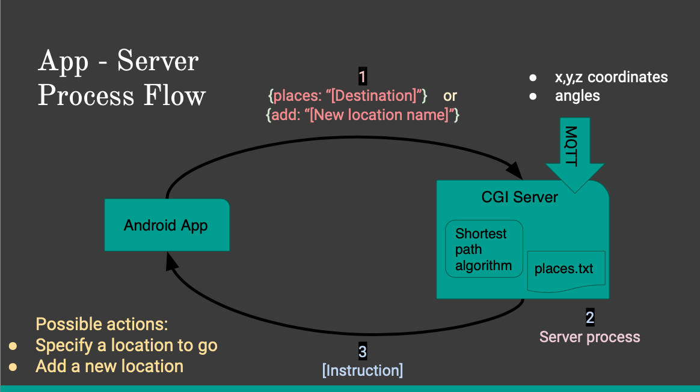

App - Server Process Flow
The android based application enables speech to text feature and let user ask for specific destination he desires to go. The other command this feature allows user to send is to adding new location to the list of current destination to which DirectMe can guide the user. The CGI (Common Gate Interface) server receives the user's command. If the command has any of the words given in pre-defined "places.txt" file, it caculates the shortest path and send step by step instructions to guide the user. If the command received has the "add" it then takes the current position of the user and assigns it to the name it asks the user to say. The position and name of the new location is then added to places.txt file.